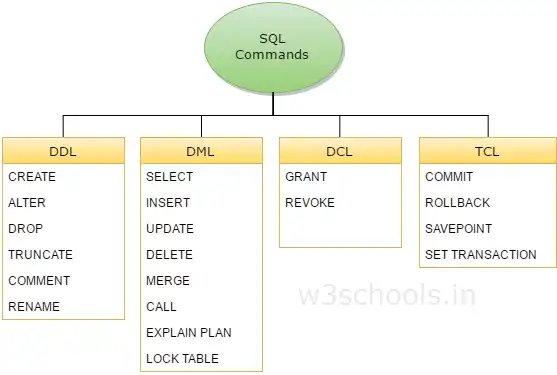

Matéria ministrada por: Alexandre Aparecido Bernardes
Conjunto de comandos SQL para administrar usuários, grupos e permissões no PostgreSQL.
Principais Comandos:
Grupos: Papéis sem permissão de login, usados para agrupar usuários.
Exercícios Práticos: Incluem criação de papéis com restrições, concessão de permissões e testes de acesso.
Blocos de código SQL armazenados no servidor para melhorar desempenho, reutilização e segurança.
Diferenças:
Tipos de Funções:
Vantagens: Redução de tráfego de rede, centralização de regras de negócio, segurança.